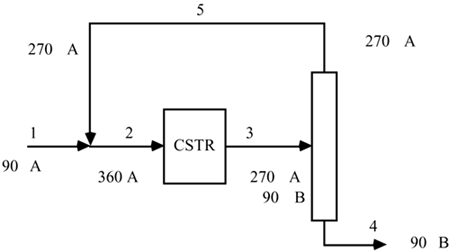

| [ Team LiB ] |
|
15.2 Steady-State and Dynamic Effects of RecycleA typical chemical process includes a chemical reactor to create products from reactants. Generally, the larger the reactor the greater the conversion of reactants to products; the main limit is imposed by equilibrium considerations. Rather than having a chemical reactor that is large enough to approach equilibrium conversion, it is usually more economical to have a smaller reactor, with a separator and a recycle stream to improve the overall conversion of reactants to products. If secondary reactions occur, or inert components can "build up," it is common to include a purge stream. Recycle systems are a source of challenging control problems, including the so-called "snowball" effect (sensitivity of recycle flow rates to disturbances) and the potentially long-time-scale dynamics, although the individual unit operations have reasonably short time scales. Steady-State Effects of RecycleTo illustrate recycle control system issues and challenges, we begin with the simple example shown in Figure 15-1. The goal of this process is to convert the feed component A to product B. The make-up feedstream (component A) mixes with the recycle stream (also primarily component A) and is fed to the isothermal CSTR. A first-order reaction occurs; the reaction is incomplete, so the reactor product stream (which is fed to the distillation column) contains both components A and B. The distillation column separates this feedstream into two relatively pure product streams. The distillate product, containing primarily A, is recycled; the bottoms product contains primarily component B and is sent to storage for sale to a customer. Clearly, the bottoms product must meet certain specifications; here we assume a composition specification. Figure 15-1. Recycle flow control and instrumentation diagram.Since you have been focused primarily on SISO control systems, the control system may seem somewhat complex to you. The make-up feedstream is under flow control, and mixes with the recycle stream; this fixes the flow to the isothermal CSTR. The CSTR level controller manipulates the flow out of the CSTR to the distillation column. Now, consider the distillation column; see Module 13 for a more detailed discussion of distillation column control. A standard two-product column has a minimum of 3 controlled outputs (pressure, distillate receiver level, and bottoms level) and 5 manipulated inputs (cooling water flow, distillate product flow, bottoms flow, reflux flow, and steam-to-reboiler). In addition, the feed flow rate is an input that may either be a disturbance or manipulated input, depending on the control strategy. For this particular flow sheet we use the control variable pairing known as "conventional dual composition control," where the overhead (distillate) and bottoms products are measured and controlled. Each of the measured outputs has been paired with a manipulated input; there are no steady-state degrees of freedom. That is, if the column feed flow rate and composition are known, all other flows and compositions in the column can be calculated. This allows us to take a simplified view shown in Figure 15-2; it should be clear that, if the overhead and bottoms product stream compositions are fixed, then the overall material balance and the component balance on A can be used to solve for the distillate (recycle) and bottoms product flowrates. Figure 15-2. Simplified recycle flow control and instrumentation diagram. Only the loops directly affecting the external flows from the separator are shown.Example 15.1 is used to illustrate an inherently steady-state problem (the "snowball effect") that exists with the proposed control strategy. This is followed by Example 15.2, which illustrates how recycle systems can appreciably change the dynamic characteristics of a process. Example 15.1: A Simple Recycle ProblemConsider a single, first-order reaction and an idealized flow sheet composed of a CSTR and a "perfect separator." An example is shown in Figure 15-3; a basis of 100 moles/hour of the feedstream (stream 1) is used and the stream component flow rates are shown directly on the flow sheet. A reactor volume of 200 moles and a reaction rate constant of 0.6 hr-1 are assumed; this results in a 16% conversion of reactant A to product B in the CSTR. In addition, the separator perfectly separates component A from B. Because of the relatively low conversion, a 5:1 recycle/feed stream ratio is required. Figure 15-3. Idealized flow sheet example with reaction, separation, and recycle.A surprising result is obtained if the fresh feed is increased from 100 moles/hour to 110 moles/hour, while maintaining the reactor volume at a constant level and assuming a perfect separator. The new material balance is shown in Figure 15-4. Figure 15-4. Idealized flow sheet example with a change in feed flow rate of 10%.Notice the tremendous change in the recycle flow rate. A 10% increase in feed flow rate has resulted in more than doubling the recycle flow rate (from 500 to 1210 moles/hr)! Similarly consider a 10% decrease in feed flow rate, which results in the stream flow rates shown in Figure 15-5. A 10 moles/time decrease (from the nominal amount of 100 from Figure 15-3) has led to a decrease in the recycle stream flow rate from 500 to 230 moles/hr. You are encouraged to work Exercise 1 to verify these results. Figure 15-5. Idealized flow sheet example with a change in feed flow rate of -10%. This extreme sensitivity to small disturbances, illustrated by Example 15.1, has been termed the "snowball effect" by Luyben (see Plantwide Process Control by Luyben et al., 1999). To minimize this effect, Luyben et al. suggest that one of the flows within the recycle system be fixed. For example, consider the strategy shown in Figure 15-6. Here, the flow rate of the mixed stream to the CSTR is maintained at a constant value by manipulating the feedstream flow. The more complete control instrumentation diagram is shown in Figure 15-7. Another alternative is to fix the flow rate of stream 3 (between the CSTR and column) by using a flow controller on stream 3, and to control the CSTR volume by manipulating the fresh make-up (stream 1) flow rate (see Exercise 2). Figure 15-6. Simplified recycle flow control and instrumentation diagram, with the reactor feed flow rate (stream 2) fixed to minimize the "snowball effect."Figure 15-7. Recycle flow control and instrumentation diagram. The reactor feed flow is fixed to minimize the "snowball effect."In this section we have covered a relatively simple process with recycle, where there were 7 control loops. A number of more complex flow sheet examples are shown later, in Section 15.5. Dynamic Effects of RecycleIt is known that recycle systems can exhibit dynamic behavior that is significantly different from the equivalent process components without a recycle. The reason for this can be found by analyzing the simple, positive feedback block diagram in Figure 15-8; here, gF(s) and gR(s) represent the forward and recycle processes, respectively. Notice that the difference between this diagram and a standard feedback-control diagram is that recycle processes exhibit positive feedback. Recall that standard feedback control is also known as negative feedback. Figure 15-8. Illustration of recycle as positive feedback.The reader should show that the closed-loop transfer function relationship between an input (u) and the output (y) is It is easy to show that the closed-loop dynamics can be substantially longer than the individual time constants. This is an interesting result because it indicates that individual unit operations in a recycle system may be designed for relatively fast behavior, yet the dominant timescale of the entire recycle system can be substantially longer. This is illustrated by the following example. Example 15.2: Dynamic Effect of RecycleTo illustrate the positive feedback effect of recycle, we use the following first-order transfer function to represent the forward process, where the time unit is minutes We also neglect any dynamic behavior of the recycle process and assume that it can be characterized as a constant gain (kR) between 0 and 1. The resulting input-output relationship is [from Equations (15.1) and (15.2)] Notice that, as the recycle gain approaches 1, the effective gain and time constant increase dramatically. This effect is also shown in Figure 15-9, where a unit step input has been applied at t = 0 min. The response of the forward path (kR = 0) is rapid with a magnitude of 1, while larger recycle gains cause slower responses with larger magnitude. This is an interesting result, since a recycle process with no dynamics has caused a tremendous increase in the time constant of the overall (forward + recycle path) system. For kR = 0.9 with a forward time constant of 1 minute, the overall dynamic time constant is 10 minutes. In Example 15.6 in Section 15.6 a physically based recycle system with similar changes in time constant are shown. Figure 15-9. Effect of recycle gain on response to a step input on a first-order process. |
| [ Team LiB ] |
|